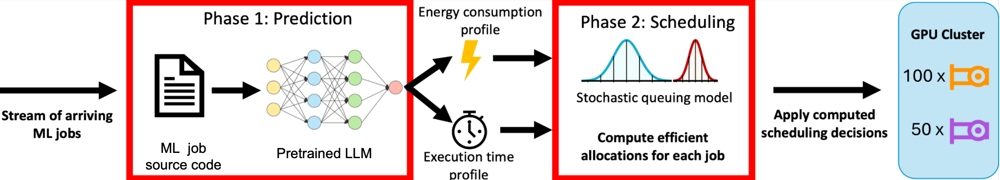
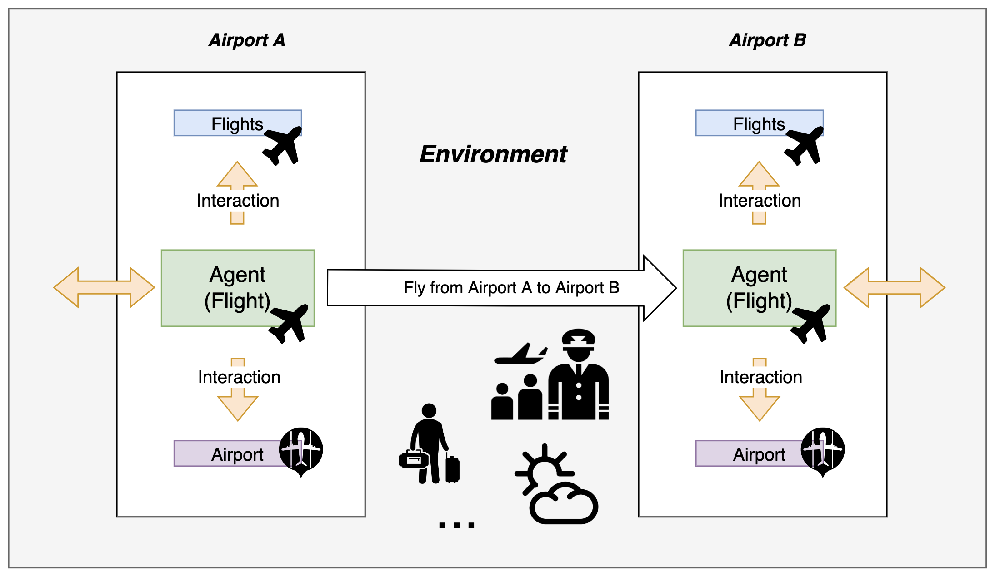

2026
|

|
Time-Annealed Perturbation Sampling: Diverse Generation for Diffusion Language Models
Jingxuan Wu, Zhenglin Wan, Xingrui Yu, Yuzhe Yang, Yiqiao Huang, Ivor Tsang, Yang You
arXiv preprint, 2026.
Project /
Paper /
Code
|

|
CaveAgent: Transforming LLMs into Stateful Runtime Operators
Maohao Ran, Zhenglin Wan, Cooper Lin, Yanting Zhang, Hongyu Xin, Hongwei Fan, Yibo Xu, Beier Luo, Yaxin Zhou, Wangbo Zhao, Lijie Yang, Lang Feng, Fuchao Yang, Jingxuan Wu, (etc..) Bo An, Yike Guo, Jun Song
Technical Report, 2026.
Paper /
Code
|
2025
|

|
FM-IRL: Flow-Matching for Reward Modeling and Policy Regularization in Reinforcement Learning
Zhenglin Wan*, Jingxuan Wu*, Xingrui Yu, Chubin Zhang, Mingcong Lei, Bo An, Ivor Tsang
arXiv preprint, 2025.
Paper /
Code
|

|
OSCAR: Orthogonal Stochastic Control for Alignment-Respecting Diversity in Flow Matching
Jingxuan Wu*, Zhenglin Wan*, Xingrui Yu, Yuzhe Yang, Bo An, Ivor Tsang
arXiv preprint 2025
Training-free diversity enhancement for flow-based text-to-image models via orthogonal stochastic control
Paper /
Code
|
2024
|
|

|
LLM-Powered Predictive Decision-Making for Sustainable Data Center Operations
Hanzhao Wang*, Jingxuan Wu*, Yu Pan, Yumeng Li, Yansong Wang, Helang Liu, Fuqiang Wang, Guanting Chen
In Preparation for Manufacturing & Service Operations Management, 2024
Paper
|
|

|
Flight Delay Propagation Modeling: Data, Methods, and Future Opportunities
Chi Li, Jianfeng Mao, Lingyi Li, Jingxuan Wu, Lianmin Zhang, Jianyu Zhu, Zibin Pan
Transportation Research Part E: Logistics and Transportation Review, 2024, 185: 103525
Survey of ~100 studies on airport delay propagation covering statistical, econometric, agent-based, machine learning, and queuing models.
DOI
|

|
Integrative Mean-Field Epidemic Model and Adaptive Graph Learning for Network-wide Delay Propagation Dynamics Prediction
Chi Li, Mingcong Lei, Jingxuan Wu, Yuzhe Yang, Zibin Pan, Xiongwen Qian, Jianfeng Mao
In Preparation for Transportation Research Part B, 2024
Paper
|